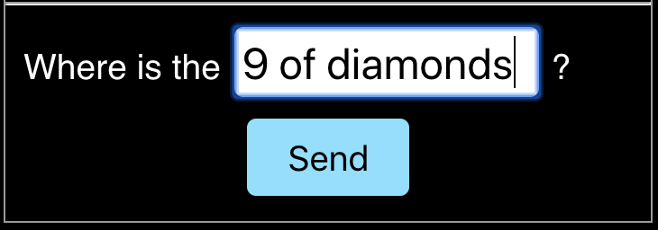

Instructions
Find the cards!
In this experiment you will play a communication game with another turker! You will need to help one another to achieve your goals.
You will both see a 4 x 4 grid containing some cards and will take turns playing the roles of 'seeker' and 'helper.' In every round of the game, the seeker will be given a goal: to find a specific set of goal cards in the grid. They will either be looking for 1 or 2 cards. However, the seeker is trapped in a fog and cannot see where any of the cards are! The helper knows where all the cards are but does not know which ones the seeker is trying to find.
There are two things you need to know to succeed.
- Both the seeker and the helper can see the list of possible goals. So the helper knows the seeker is trying to obtain one of these sets but does not know which one:
-
The seeker is able to ask the helper a
question about the location of a card. Specifically, the
seeker must choose a card to ask about and type its full
name to complete the question: "Where is the ...?"
 The helper will then see this question and select which cards to reveal (by clicking on the cards, and then on the 'REVEAL' button). They will need to wait until the seeker has sent a question before being able to click anything.

On every round, it is possible to achieve the goal in a single exchange. This is how you get the maximum bonus of $0.05. When the card or cards in the speaker's goal are revealed, you will switch roles and advance to the next round. Otherwise, the seeker must choose another card to ask about until the goal cards are revealed. For every extra follow-up question the seeker needs to ask, and for every extra card not in the goal that the helper reveals, your bonus will decrease by $0.01, so pay attention to your choices!
There are a total of 6 rounds. After the final round you will answer a few more questions and be on your way.
A few final notes: First, since you are playing with another player, you may see a screen like this before the game begins:

Second, please be respectful of the worker you're playing with: their bonus payment depends on your performance as well, so please pay close attention and try to be as responsive and helpful as possible.
Finally, please DO NOT refresh the page at any point once
you start the game (including the waiting page). If you
refresh, you will not be able to rejoin the game you were in
and you may not be able to submit the HIT.
Thank you!
Please fill out this short quiz below before getting started. Good luck and have fun!
Comprehension Quiz
The Seeker can click on cards to reveal.
True
False
The Helper aims to reveal the cards in the Seeker's goal set and no others.
True
False
The Seeker must pick a single card to ask about (i.e. Where is the jack of hearts?)
True
False
There are a total of 200 rounds.
True
False
The seeker and helper are both aware of all the possible goals the seeker might have on each round.
True
False
Have you participated in this study before?
Yes
No